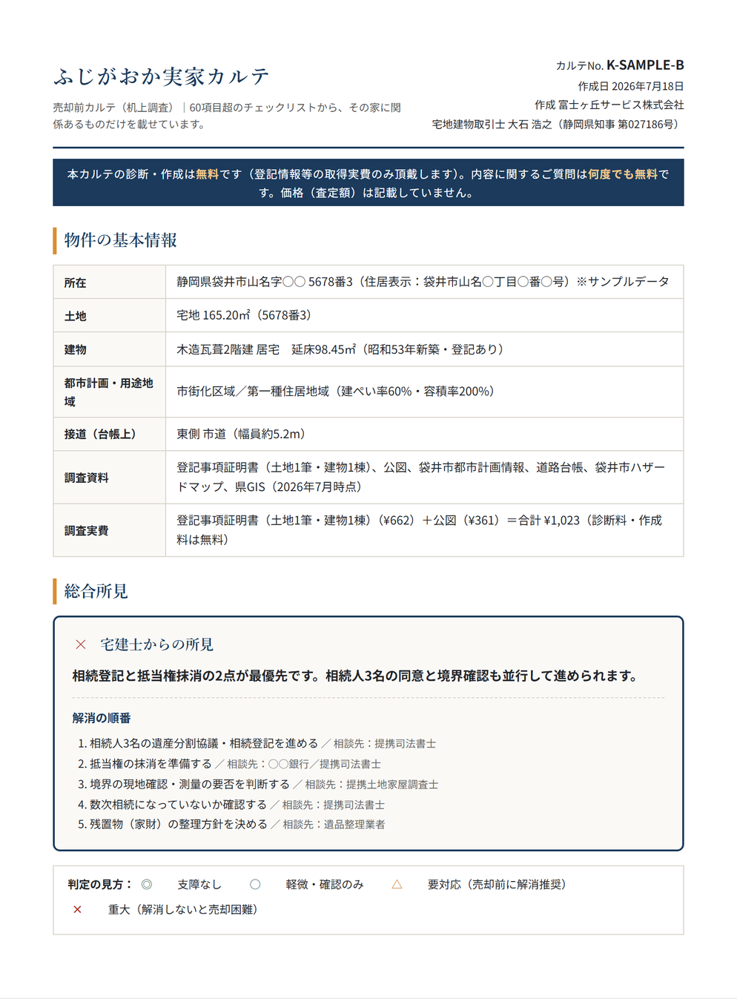
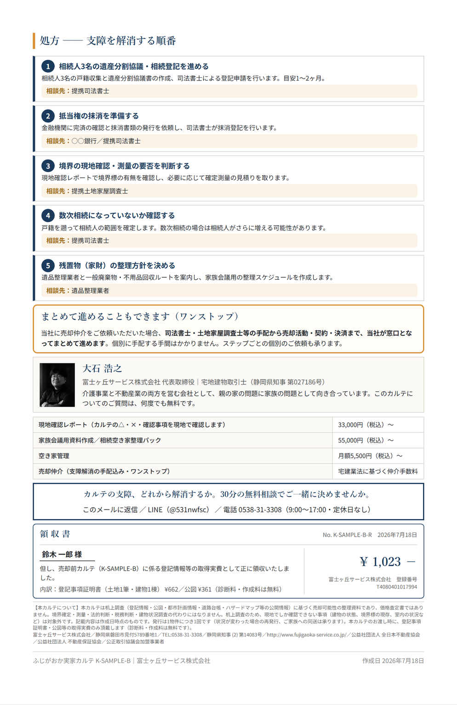

ふじがおか実家カルテ 見本（記入例）
以下は3パターンのダミー物件による記入例です。実在の物件・人物ではありません。
価格は出ません。査定書ではなく、売るときに支障になることを先に洗い出す資料です。
内部では60項目超を確認し、関係する項目だけをカルテに掲載します。2026年8月31日まで、作成料と標準的な資料取得実費は0円です。追加費用が必要な場合は、調査前に金額をご案内します。
「うちの実家がどの見本に近いか、まずここで確かめてみてください。カルテは問題を並べるだけでなく、次に何をするかまで整理します。」──大石 浩之
3つの家族事例
選ぶと、下のカルテ見本が切り替わります。
SAMPLE A｜問診票 No. 1／3 物件の基本情報・総合所見
1枚目：物件の基本情報と、宅建士からの総合所見

SAMPLE A｜問診票 No. 2／3 所見一覧
2枚目：所見一覧── 気になる行をクリックすると解説記事に進みます
スマホの方は下の一覧からどうぞ →
各行をクリック（スマホは下の一覧から）すると、その項目の解説記事に移動します。
SAMPLE A｜問診票 No. 3／3 処方・担当窓口・領収書
3枚目：支障を解消する順番と、担当窓口

SAMPLE B｜問診票 No. 1／3 物件の基本情報・総合所見
1枚目：物件の基本情報と、宅建士からの総合所見

SAMPLE B｜問診票 No. 2／3 所見一覧
2枚目：所見一覧── 気になる行をクリックすると解説記事に進みます
スマホの方は下の一覧からどうぞ →
各行をクリック（スマホは下の一覧から）すると、その項目の解説記事に移動します。
SAMPLE B｜問診票 No. 3／3 処方・担当窓口・領収書
3枚目：支障を解消する順番と、担当窓口

CHECK ITEMS
Ⅰ 権利
Ⅱ 境界・土地
Ⅲ 法規
Ⅳ 建物
見本と同じ形式で、あなたの実家について作成します。作成料は0円、価格は出ません。
受付 9:00〜17:00｜定休日なし・予約営業